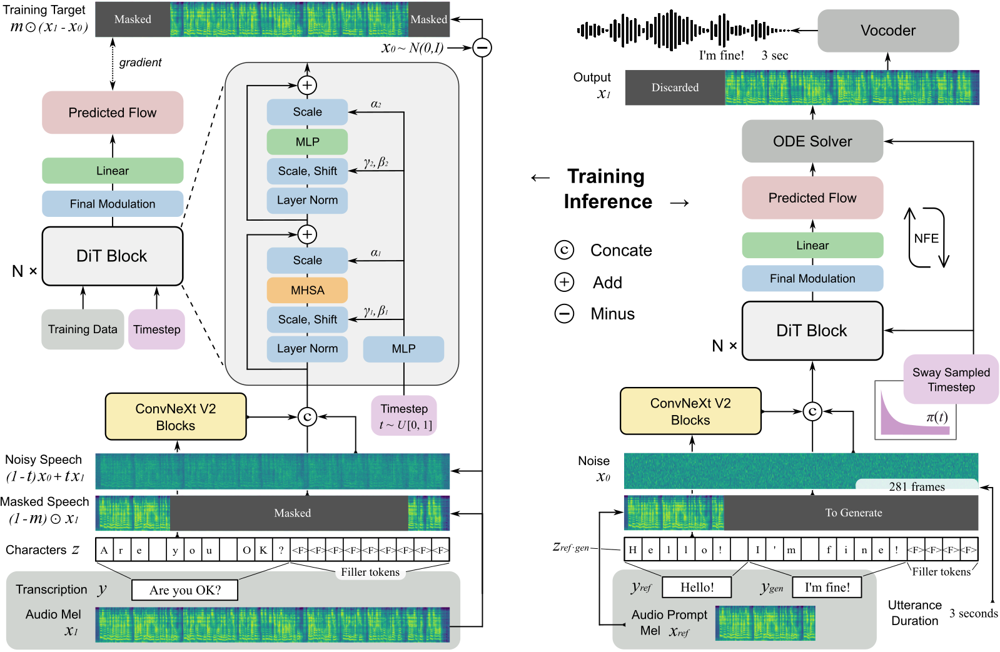

Abstract This paper introduces F5-TTS, a fully non-autoregressive text-to-speech system based on flow matching with Diffusion Transformer (DiT). Without requiring complex designs such as duration model, text encoder, and phoneme alignment, the text input is simply padded with filler tokens to the same length as input speech, and then the denoising is performed for speech generation, which was originally proved feasible by E2 TTS. However, the original design of E2 TTS makes it hard to follow due to its slow convergence and low robustness. To address these issues, we first model the input with ConvNeXt to refine the text representation, making it easy to align with the speech. We further propose an inference-time Sway Sampling strategy, which significantly improves our model’s performance and efficiency. This sampling strategy for flow step can be easily applied to existing flow matching based models without retraining. Our design allows faster training and achieves an inference RTF of 0.15, which is greatly improved compared to state-of-the-art diffusion-based TTS models. Trained on a public 100K hours multilingual dataset, our Fairytaler Fakes Fluent and Faithful speech with Flow matching (F5-TTS) exhibits highly natural and expressive zero-shot ability, seamless code-switching capability, and speed control efficiency. Demo samples can be found at https://SWivid.github.io/F5-TTS. We release all code and checkpoints to promote community development.
Contents
This page is for research demonstration purposes only.
Model Overview

Figure 1: An overview of F5-TTS training (left) and inference (right). The model is trained on the text-guided speech-infilling task and condition flow matching loss. The input text is converted to a character sequence, padded with filler tokens to the same length as input speech, and refined by ConvNeXt blocks before concatenation with speech input. The inference leverages Sway Sampling for flow steps, with the model and an ODE solver to generate speech from sampled noise.
All samples in this demo page are generated with F5-TTS (NFE=32 CFG=2 w/ SS) in one time (no cut), with pretrained Vocos as vocoder.
Zero-shot Generation
Prompt and text from the demo page of Seed-TTS.
| Language | Prompt | Same Language Generation | Cross-linugal Generation |
|---|---|---|---|
| EN | I don't really care what you call me. I've been a silent spectator, watching species evolve, empires rise and fall. But always remember, I am mighty and enduring. Respect me and I'll nurture you; ignore me and you shall face the consequences. |
顿时，气氛变得沉郁起来。乍看之下，一切的困扰仿佛都围绕在我身边。我皱着眉头，感受着那份压力，但我知道我不能放弃，不能认输。于是，我深吸一口气，心底的声音告诉我：“无论如何，都要冷静下来，重新开始。” |
|
Perhaps they are driven by the delicious blend of flavors, or it could be the appealing visual presentation. At the end of the day, our choices in food reflect our personal preferences and sometimes, even our lifestyle or belief system. |
我抬起头，坚定地说：“身高不能决定一切，这世界在看我，我更看得到世界。无论是北上广，或是别的什么，我都将以我自己的方式去攀爬，去追逐。我可能小，但我绝不会被忽视。” |
||
Your safety and the pack's reputation are at stake. Your bravery is admirable, but sometimes bravery is knowing when to retreat. Please, consider returning with me. We can work out a plan, but only if you're willing to listen. |
你的安全以及族群的声誉都危在旦夕。你的勇敢令人钦佩，但有时候勇敢在于懂得何时撤退。拜托，考虑一下和我一起回去吧。我们可以制定一个计划，但前提是你愿意倾听。 |
||
| ZH | 突然，身边一阵笑声。我看着他们，意气风发地挺直了胸膛，甩了甩那稍显肉感的双臂，轻笑道："我身上的肉，是为了掩饰我爆棚的魅力，否则，岂不吓坏了你们呢？" |
Suddenly, there was a burst of laughter beside me. I looked at them, stood up straight with high spirit, shook the slightly fleshy arms, and smiled lightly, saying, "The flesh on my body is to hide my bursting charm. Otherwise, wouldn't it scare you?" |
|
顿时，气氛变得沉郁起来。乍看之下，一切的困扰仿佛都围绕在我身边。我皱着眉头，感受着那份压力，但我知道我不能放弃，不能认输。于是，我深吸一口气，心底的声音告诉我：“无论如何，都要冷静下来，重新开始。” |
Suddenly, the atmosphere became gloomy. At first glance, all the troubles seemed to surround me. I frowned, feeling that pressure, but I know I can't give up, can't admit defeat. So, I took a deep breath, and the voice in my heart told me, "Anyway, must calm down and start again." |
||
皇上的面色未变，宛如雕塑般静止，他的眼中闪过一丝动人的温度。他深深地看了那位忠心耿耿的臣子一眼，终于开口：“诺，我会再考虑考虑的。”他的声音低沉且坚定，留下空气中隐隐的无奈与柔情。 |
The emperor's complexion did not change, remaining as still as a sculpture, and a touch of touching warmth flashed in his eyes. He deeply glanced at the loyal minister, and finally spoke: "Well, I will consider it again." His voice was low and firm, leaving a faint hint of helplessness and tenderness in the air. |
Code-Switch, Text from FireRedTTS demo page.
| Prompt | Text | Code-Switched Generation |
|---|---|---|
| 你昨天的performance真是outstanding，完全展示了你的skills。 | ||
| 我觉得我们需要一个更clear的strategy来实现我们的goals。 | ||
| 这次旅行的schedule有点tight，我们需要plan得更efficient一些。 | ||
| 他今天的mood看起来不太好，可能需要一些space。 |